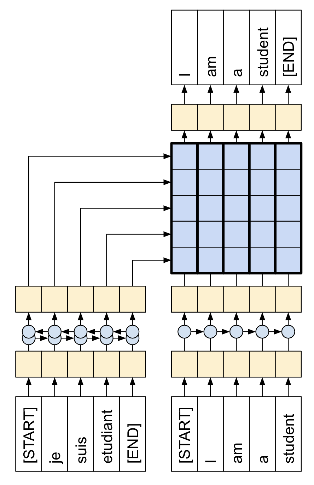
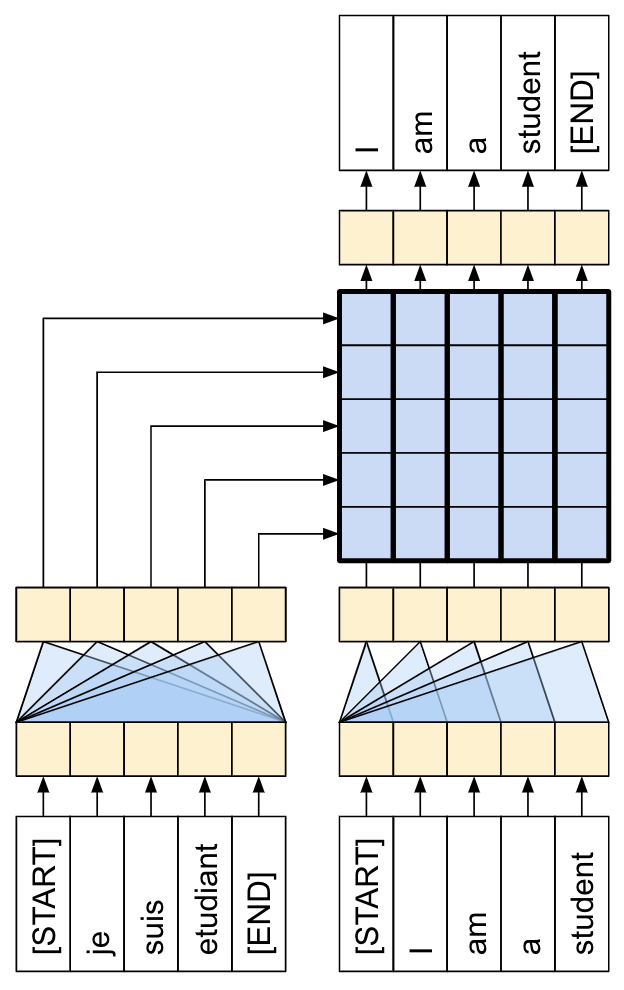
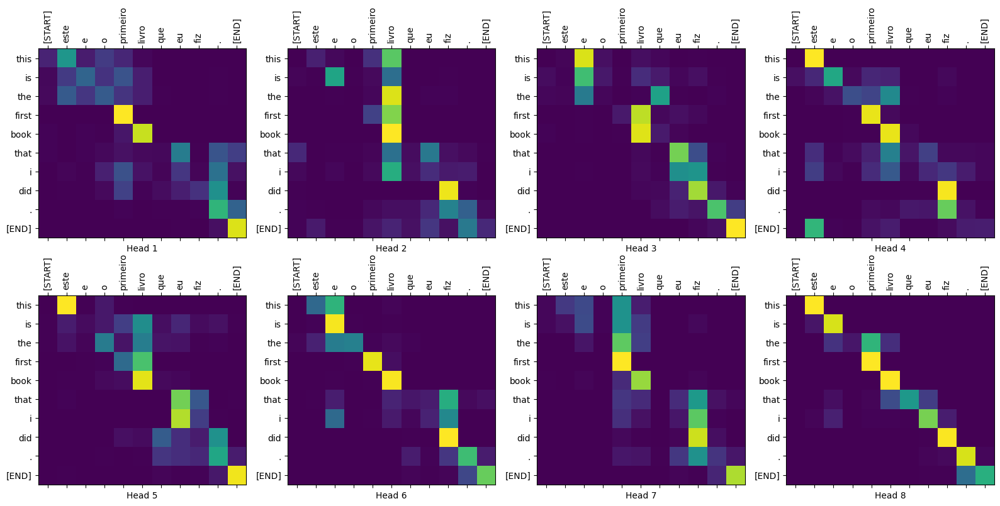
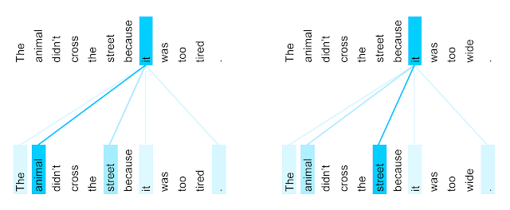

7.1 Translate text with Transformer
Created Date: 2025-07-15
This tutorial demonstrates how to create and train a sequence-to-sequence Transformer model to translate Portuguese into English. The Transformer was originally proposed in "Attention is all you need" by Vaswani et al. (2017).
Transformers are deep neural networks that replace CNNs and RNNs with self-attention . Self-attention allows Transformers to easily transmit information across the input sequences.
As explained in the Google AI Blog post :
Neural networks for machine translation typically contain an encoder reading the input sentence and generating a representation of it. A decoder then generates the output sentence word by word while consulting the representation generated by the encoder. The Transformer starts by generating initial representations, or embeddings, for each word... Then, using self-attention, it aggregates information from all of the other words, generating a new representation per word informed by the entire context, represented by the filled balls. This step is then repeated multiple times in parallel for all words, successively generating new representations.
Figure 1 - Applying the Transformer to Machine Translation
That's a lot to digest, the goal of this tutorial is to break it down into easy to understand parts. In this tutorial you will:
Prepare the data.
Implement necessary components: 1. Positional embeddings; 2. Attention layers; 3. The encoder and decoder.
Build & train the Transformer.
Generate translations.
Export the model.
To get the most out of this tutorial, it helps if you know about the basics of text generation and attention mechanisms.
A Transformer is a sequence-to-sequence encoder-decoder model similar to the model in the NMT with attention tutorial . A single-layer Transformer takes a little more code to write, but is almost identical to that encoder-decoder RNN model. The only difference is that the RNN layers are replaced with self-attention layers. This tutorial builds a 4-layer Transformer which is larger and more powerful, but not fundamentally more complex.


Figure 2 - The RNN+Attention Model|A 1-layer Transformer
After training the model in this notebook, you will be able to input a Portuguese sentence and return the English translation.

Figure 3 - Visualized Attention Weights
Why Transformers are significant:
Transformers excel at modeling sequential data, such as natural language.
Unlike recurrent neural networks (RNNs) , Transformers are parallelizable. This makes them efficient on hardware like GPUs and TPUs. The main reasons is that Transformers replaced recurrence with attention, and computations can happen simultaneously. Layer outputs can be computed in parallel, instead of a series like an RNN.
Unlike RNNs (such as seq2seq, 2014) or convolutional neural networks (CNNs) (for example, ByteNet), Transformers are able to capture distant or long-range contexts and dependencies in the data between distant positions in the input or output sequences. Thus, longer connections can be learned. Attention allows each location to have access to the entire input at each layer, while in RNNs and CNNs, the information needs to pass through many processing steps to move a long distance, which makes it harder to learn.
Transformers make no assumptions about the temporal/spatial relationships across the data. This is ideal for processing a set of objects (for example, StarCraft units).

Figure 4 - The Encoder Self-attention Distribution for the Word "it"
7.1.1 Data Handling
This section downloads the dataset and the subword tokenizer, from this tutorial, then wraps it all up in a for training.
7.1.1.1 Download the Dataset
7.1.2 Test the Dataset
7.1.3 Define the Components
There's a lot going on inside a Transformer. The important things to remember are:
It follows the same general pattern as a standard sequence-to-sequence model with an encoder and a decoder.
If you work through it step by step it will all make sense.